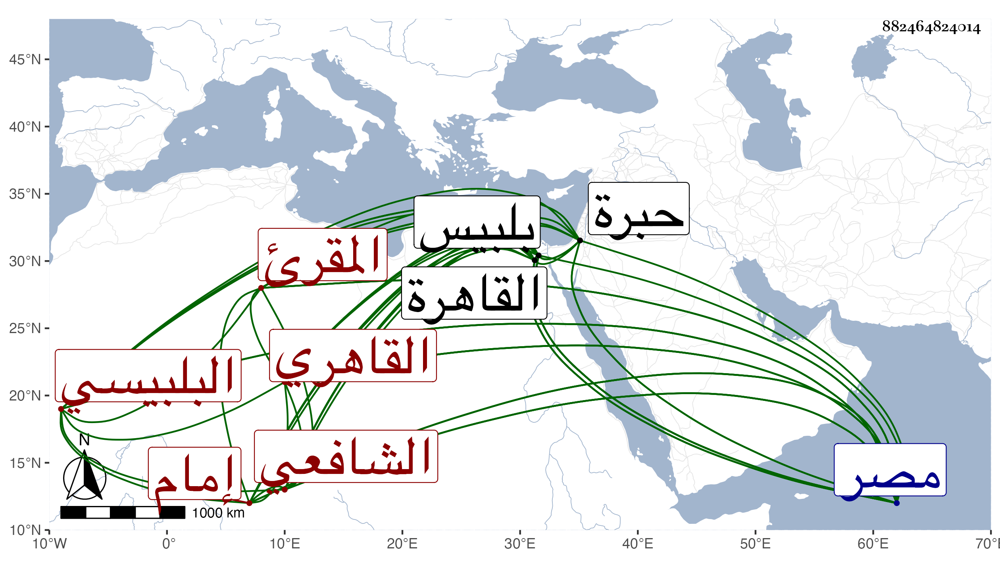

0902Sakhawi.DawLamic.ITO20230111-ara1.EIS1600.882464824014
Biography ID: 882464824014
463
عثمان بن عبد الرحمن بن عثمان الفخر البلبيسي ثم القاهري الشافعي المقرئ ويعرف بالفخر إمام الأزهر . ولد سنة خمس وعشرين وسبعمائة ببلبيس ونشأ بها فحفظ القرآن وأدب الأولاد هناك دهرا ثم قدم القاهرة في سنة أربع وأربعين قال شيخنا في معجمه إمام الجامع الأزهر رأس في القراءات فصار غالب طلبة البلد ممن قرأ عليه بل ذكر لي أن الجن كانوا يقرءون عليه من حيث لا يراهم ، سمعت ذلك منه في سنة سبع وتسعين بعد أن حدث به شيخنا ابن سكر عنه في سنة سبع وأربعين وحدث عنه ابن سكر أيضا أنه أخبره أن الجان أخبروه أن الفناء يقع بمصر بعد سنة وأنه يكون عظيما جدا قال وكنت قد عزمت على الحج فجاورت ووقع الطاعون العام الشهير كما قيل وقد أضر . مات في ثاني ذي القعدة سنة أربع وقد أكمل ثمانين سنة ولم يكن إسناده بالعالي فأنه قرأ على المجد إسماعيل بن يوسف الكفتي بقراءته على التقي الصائغ وعلى ابن نمير السراج وكتب له إجازة وصفه فيها بالشيخ الإمام المقرئ الفاضل المحقق وشهد عليه فيها سنة إحدى وخمسين الجمال ابن هشام ووصف صاحب الترجمة بالشيخ العالم الفاضل المتقن المحرر جمال المدرسين بقية السلف الصالحين وكذا شهد فيها الجمال الأسنوي وأبو بكر بن الجندي ، وقال في إنبائه : تصدى للاشتغال بالقراءة فأتقن السبع وصار أمة وحده وأخبرني أنه لما كان ببلبيس كان الجن يقرءون عليه وقرأ عليه خلق كثير وحدث عنه خلق كثير في حياته وانتفع به من لا يحصى عددهم في القراءة وانتهت إليه الرياسة في هذا الفن ، وكان صالحا خيرا أقام بالجامع الأزهر يؤم فيه مدة طويلة وقال المقريزي قرأ بالسبع والعشر والشواذ وأم بالأزهر زمانا وأخذ الناس عنه القراءات ورحلوا إليه من الأقطار وتخرج به خلائق وكان خبيرا بالقراءات عارفا بتعليلها صبورا على الإقراء خيرا دينا هينا معتقدا تخشع القلوب لقراءته ولنداوة صوته ، ولم يزل على ذلك حتى مات ، وذكره ابن الملقن في طبقات القراء وقال أنه قرأ على ابن السراج بحرف أبي عمرو وعلى الشرف الدلاصي بحرف ابن كثير وعلى شيخه الكفتي بثلاثة عشر بالمبهج والمستنير والإرشاد والتذكرة وغيرها وعلى ابن الصايغ والبرهان الحكري وابن سهل الوزير المغربي والمجد حرمي بن مكي البلبيسي نزيل الخليل قال وهو الآن شيخ مصر تصدر بالملكية والفاضلية والمنصورية وجامعي الحاكم والطولوني وغيرها يعني كالأزهر والشريفية والسابقية ومدرسة أبي غالب وكذا ذكره ابن الجزري في طبقات القراء أيضا وقال إمام الجامع الأزهر شيخ الديار المصرية إمام كامل ناقل قرأ القراءات على أبي بكر بن الجندي وإسماعيل الكفتي وحرمي وبعضها على إبراهيم الحكري ومحمد بن السراج الكاتب وعلى ابن يغمور الحلبي والمحب محمد بن يوسف ناظر الجيش وموسى بن أيوب الضرير قرأ عليه الأوحدي وعثمان بن إبراهيم بن أحمد البرماوي وأنه دفن بالباب الجديد بالقرب من باب المحروق وباب الوزير ، ورأيت في بعض إجازات من أخذ عنه أنه أكمل على الشمس محمد بن محمد بن نمير السراج والكفتي وابن الجندي وحرمي ولم يكمل على البرهان الحكري المتصدر بالملكية وعلي بن يغمر الحلبي والمحب ناظر الجيش وعلى ابن سعيد الكناني . قلت وقد أخذ عنه خلق ممن أخذنا عنه منهم الزين رضوان تلا عليه بعض القرآن بالسبع وذكره المقريزي في عقوده .
